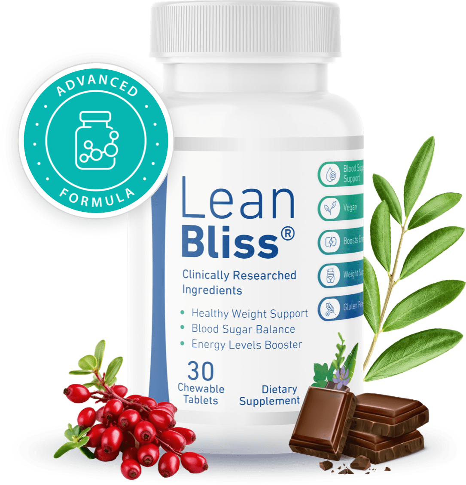

LeanBliss: Discover the supplement and its key benefits
Looking for a natural way to support healthy weight management? Learn how LeanBliss works, explore its ingredients, discover its potential benefits, and find out whether it's the right addition to your daily wellness routine.

⭐⭐⭐⭐⭐
LeanBliss is a natural dietary supplement formulated with carefully selected plant-based ingredients to support healthy blood sugar levels, promote metabolic wellness, and complement a balanced lifestyle. Its stimulant-free formula is designed for people looking for practical daily nutritional support as part of their overall health and wellness routine.
View OfferWhat Could Be Making Weight Management More Difficult?
Many people make changes to their diet, try to stay active, and still find it difficult to manage their weight. It's also common to experience frequent hunger, cravings for sugary foods, and a lack of energy that doesn't seem to go away.
These challenges can make the weight management journey more frustrating and make it harder to maintain healthy habits over time.
Why Does This Happen?
One factor that may contribute to this is the body's ability to maintain healthy blood sugar levels. When blood sugar levels fluctuate throughout the day, some people may experience increased hunger, stronger cravings for high-sugar foods, and lower energy levels.
While this isn't the only factor that can affect weight management, supporting healthy blood sugar balance may be an important part of an overall wellness strategy, along with a balanced diet, regular physical activity, and healthy lifestyle habits.
A Natural Option That Has Been Gaining Attention
To address these challenges, **LeanBliss** was developed as a dietary supplement made with a blend of carefully selected natural ingredients designed to support healthy blood sugar levels and overall metabolic health.
Rather than replacing healthy habits, LeanBliss is intended to complement a balanced lifestyle and provide additional nutritional support for people looking to improve their metabolic wellness without relying on stimulant-based formulas.
How Does LeanBliss Work?
LeanBliss combines plant extracts and natural compounds that are commonly used to support healthy metabolism and help maintain normal blood sugar levels.
- Its formula includes ingredients such as:
- Ceylon Cinnamon Bark
- Corosolic Acid (Banaba Leaf Extract)
- Turmeric Bulb Extract
- Fucoxanthin
- Fucoidan
- Citrus Sinensis
- Kudzu Flower Extract
- Oleuropein (Olive Leaf Extract)
- Berberine
- Xylitol
These ingredients work together to support the body's natural metabolic processes, especially when combined with a balanced diet and an active lifestyle.
- In addition, LeanBliss features a formula that is:
- Made with natural ingredients;
- Non-GMO;
- Stimulant-free;
- Easy to incorporate into your daily routine.
Key Benefits of LeanBliss
- Some of the potential benefits reported by users include:
- ✔ Supports healthy blood sugar levels.
- ✔ May help reduce cravings for sweets and sugary foods.
- ✔ Helps support healthy weight management when combined with healthy lifestyle habits.
- ✔ Made with carefully selected natural ingredients.
- ✔ Stimulant-free formula.
- ✔ Convenient for everyday use.
- ✔ Designed to complement an overall wellness routine.
Why Does This Approach Make Sense?
When the body is better able to maintain healthy metabolic balance, many people find it easier to follow a nutritious eating plan and manage occasional food cravings.
Although no dietary supplement can replace a healthy diet or regular exercise, choosing a formula specifically designed to support metabolic health may be a practical addition to a long-term wellness routine.
LeanBliss was created with this purpose in mind—to work alongside healthy lifestyle choices as part of a balanced approach to overall health.
Is It Easy to Use?
Yes. LeanBliss was designed to fit easily into your daily routine and does not contain stimulants.
According to the manufacturer, the formula is produced using carefully selected ingredients and quality control standards. If you have a medical condition, are pregnant or nursing, or are taking prescription medications, it is recommended that you consult your healthcare provider before using any dietary supplement.
Want to Learn More?
If you'd like to learn more about how LeanBliss works, explore its complete ingredient list, read the recommended directions for use, and check current availability, visiting the manufacturer's official website is the best place to start.
There, you'll find the latest product information to help you decide whether LeanBliss is the right addition to your health and wellness goals.
🏷️🔥Special offer🔥🏷️
Interested in learning more about LeanBliss?
Visit the official website to explore the complete ingredient list, recommended usage, current pricing, and any available promotions directly from the manufacturer.
Access the official website.